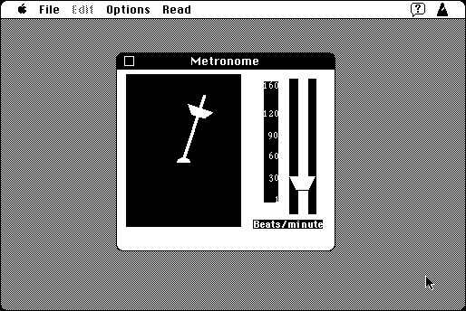

Download
metronome1.0.zip (37K) Metronome 1.0 repackaged into a zipped hfs disk image and checksum file. The disk image can be mounted with Mini vMac.
metronome1.0.cpt.hqx (49K) Metronome 1.0 in the original format.
copyright: Paul Lynch
mod date: Mar 25, 1994
license: shareware
A “simulation of a mechanical metronome, used primarily for setting the tempo when playing music”. Requires System 7.

If you find these downloads useful, please consider helping the Gryphel Project, which hosts them.
Here are the md5 checksums for the downloads, signed with Gryphel Key 5:
--------- GRY SIGNED TEXT --------- d3a0adc004b2998751920a057daa03ba metronome1.0.zip 137995e9457ce267341ce9d510843a49 metronome1.0.cpt.hqx ------- BEGIN GRY SIGNATURE ------- Gry/4Xa8CFcUzxdN/MpfnV8x0reJhtwGCh/ynBDAltpS7Q1mFaBg04LDl8NjZESy Vj2BrY+1yr0qOl2+KRJcOsncKKoP6ziUe+iLEzLXyAvkWBu2PWNKD+kew8lw+2ki bZfwmnyGuk9G6l+AyiyOTQue+2Yzn3q7Tu+U8bx6oD2SlzAj1Bc9kx1NxLsn7y7+ -------- END GRY SIGNATURE --------